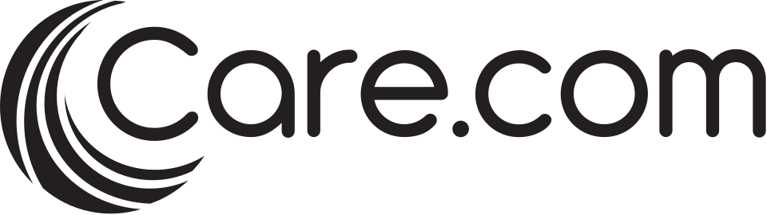

홈 > 브랜드 매거진 > 노리단
노리단 Noridan
청소년과 예술가가 재활용품으로 공연을 만드는 사회적기업
산업 분야 브랜드·비즈니스 · 공개 등급 자료 기반 · 브랜드 평가 4 ★
NO
노리단
한눈에 보는 브랜드
2004년 청소년과 예술가가 함께 공연을 만드는 프로젝트로 시작했다. 학교 밖 청소년들에게 폐자재·재활용품으로 만든 타악기를 활용한 공연 및 워크숍 참여 기회를 제공했다.
이후 문화예술 분야의 초기 사회적기업 모델 중 하나로 활동을 이어갔다.
브랜드 아이덴티티
예술 창작 활동을 청소년 자립·교육 문제 해결의 수단으로 삼은 사례로, 공연이라는 상업적 결과물과 사회적 목적(청소년 참여)을 동시에 달성하는 구조를 보여준다. 공연·워크숍 프로그램 확대와 지자체·기업 협업을 통한 활동 범위 확장이 성장 원리다.
타임라인
자주 묻는 질문
노리단의 브랜드 아이덴티티는 무엇인가요?
예술 창작 활동을 청소년 자립·교육 문제 해결의 수단으로 삼은 사례로, 공연이라는 상업적 결과물과 사회적 목적(청소년 참여)을 동시에 달성하는 구조를 보여준다.
함께 읽을 브랜드
 브랜드·비즈니스 · 자료 기반행복나래
브랜드·비즈니스 · 자료 기반행복나래SK그룹이 만든 국내 최초 대기업 계열 사회적기업
AM
AMI AMI
브랜드·비즈니스 · 편집 검수AMI AMIAMI AMI는 2024년에 기록된 Designed by Wedge 계열의 브랜드 아이덴티티 사례입니다. Wedge가 아이덴티티 작업의 디자이너로 기록되어 있습니다....

브랜드·비즈니스 · 편집 검수Care.comCare.com는 2025년에 기록된 Designed by Manual 계열의 브랜드 아이덴티티 사례입니다. Manual가 아이덴티티 작업의 디자이너로 기록되어 있습...
 브랜드·비즈니스 · 편집 검수INAX
브랜드·비즈니스 · 편집 검수INAXINAX는 1985년에 기록된 Historical 계열의 브랜드 아이덴티티 사례입니다. PAOS가 아이덴티티 작업의 디자이너로 기록되어 있습니다. 공개 섹션 정보는...
Me
Mercado Famous
브랜드·비즈니스 · 편집 검수Mercado FamousMercado Famous는 2024년에 기록된 Designed by Gander 계열의 브랜드 아이덴티티 사례입니다. Gander가 아이덴티티 작업의 디자이너로 기...
브랜드·비즈니스 · 편집 검수Muse GroupMuse Group는 2024년에 기록된 Designed by Collins 계열의 브랜드 아이덴티티 사례입니다. Collins가 아이덴티티 작업의 디자이너로 기록되...
 브랜드·비즈니스 · 자료 기반빨간펜
브랜드·비즈니스 · 자료 기반빨간펜가정 방문 첨삭 지도로 성장한 교원그룹의 학습지 브랜드
메가스터디와 경쟁한 국내 온라인 입시강의 선도 브랜드